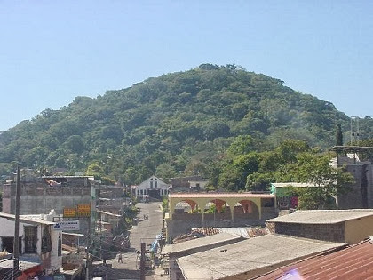

MAPA DE CUSCATLAN
Información
Cuscatlán es el departamento más pequeño de El Salvador con una extensión territorial de 756 km². Su cabecera departamental es Cojutepeque, conocida como "La Ciudad de los Chorizos". Se caracteriza por su clima fresco en algunas zonas y por su producción agrícola, especialmente maíz, caña de azúcar y frutas tropicales.
Datos Históricos
El nombre Cuscatlán proviene del náhuatl y significa "Tierra de las Joyas". Fue un importante asentamiento indígena antes de la llegada de los españoles. En la época colonial, el área fue conocida por su producción de añil. El departamento fue fundado en 1835 y jugó un papel importante en la historia agrícola del país.
Lista de Municipios
- Candelaria
- Cojutepeque
- El Carmen
- El Rosario
- Monte San Juan
- Oratorio de Concepción
- San Bartolomé Perulapía
- San Cristóbal
- San José Guayabal
- San Pedro Perulapán
- San Rafael Cedros
- San Ramón
- Santa Cruz Analquito
- Santa Cruz Michapa
- Suchitoto
- Tenancingo
Centros Turísticos
Uno de los destinos más visitados en Cuscatlán es Suchitoto, un pintoresco pueblo colonial conocido por su iglesia Santa Lucía y su vista al Lago de Suchitlán. También destaca el Mirador de Los Planes de La Laguna en Cojutepeque.
Centros Turísticos
La ciudad de Cojutepeque en el departamento de Cuscatlán alberga un tesoro natural. Este tesoro es el Cerro de Las Pavas, el cual se encuentra ubicado a 34 kilómetros al oriente de San Salvador
Lagos
El principal lago del departamento es el Lago de Suchitlán, un embalse artificial creado por la represa Cerrón Grande. Es un lugar ideal para paseos en lancha, avistamiento de aves y disfrutar de su belleza escénica.

Ríos
El río Jiboa tiene una longitud de 60 km, y nace en el municipio de San Rafael Cedros, departamento de Cuscatlán, El Salvador. Tiene una trayectoria en la dirección noreste-sudoeste, y desemboca en el Océano Pacífico la profundidad del río Jiboa es de 3 metros.
Volcanes
El Volcán de Guazapa es uno de los más emblemáticos de la zona. Aunque está inactivo, es famoso por haber sido refugio de guerrilleros durante la guerra civil salvadoreña. Actualmente es un destino para practicar senderismo y disfrutar de la naturaleza.
Personajes Célebres
El General Nicolás Espinoza fue un militar y político salvadoreño. Nació en Tenancingo en septiembre de 1813 y murió en Nacaome, Honduras, en marzo de 1866. Gobernó la República de El Salvador como jefe de Estado del 10 de abril al 15 de noviembre de 1835.